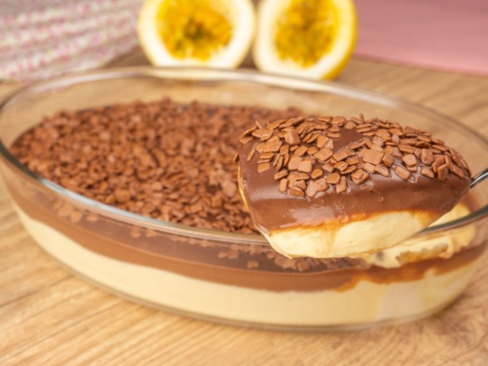

Receitas Bia
Ínicio
Bolo
Sobremesa
Torta
Mousse de maracujá com chocolate

Ingredientes mousse
♦ 390 g de Leite condensado (1 lata)
♦ 200 g de Creme de leite (1 caixinha)
♦ 180 mL de Suco de maracujá concentrado (3/4 de xícara)
Ingredientes para a cobertura
♦ 200 g de Chocolate meio amargo picado
♦ 200 g de Creme de leite (1 caixinha)
♦ Granulado ou raspas de chocolate a gosto
Modo de preparo
1- Coloque no liquidificador o leite condensado, o creme de leite e o suco de maracujá concentrado
2- Bata apenas até ele engrossar, cerca de 30-40 segundos
3- Desligue o liquidificador e transfira para um refratário
4- E leve para a geladeira por pelo menos 1 hora
Modo de preparo cobertura
1- Derreta o chocolate de 30 em 30 segundos no micro ondas
2- Quando estiver homogêneo acrescente o creme de leite e misture bem
3- Deixe que esteja em temperatura ambiente
4- Coloque por cima da mousse e decore com granulado ou raspas de chocolate